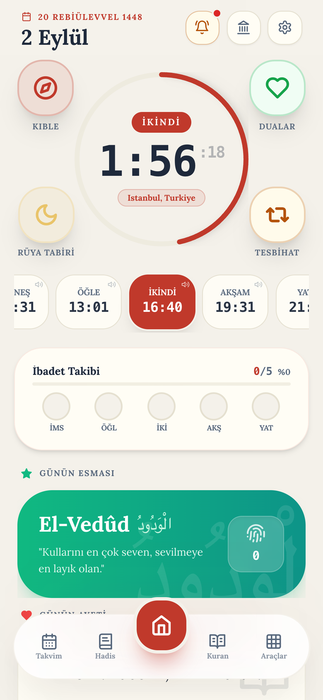
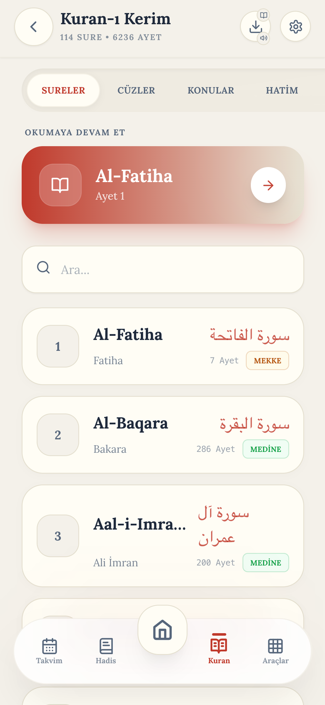
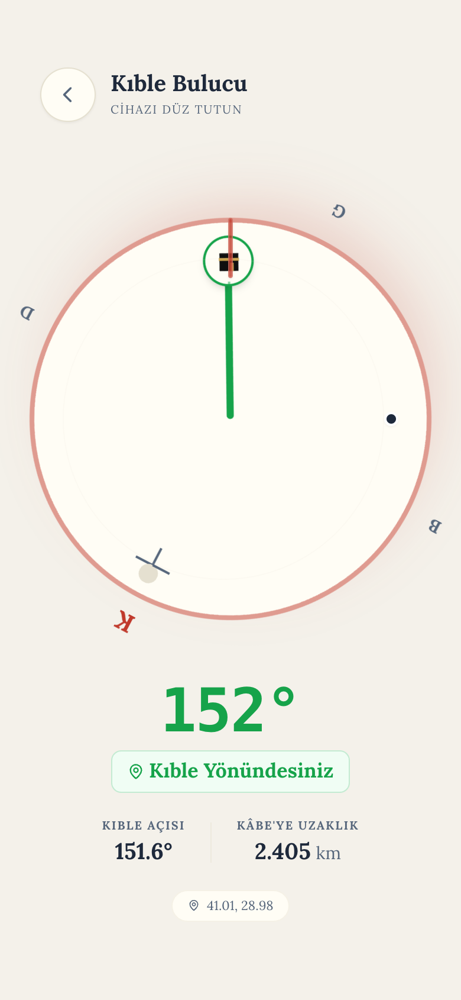
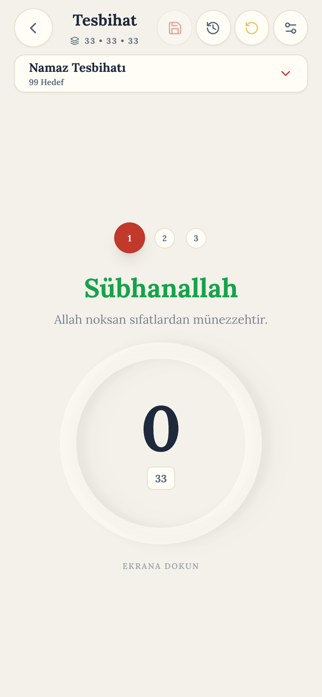
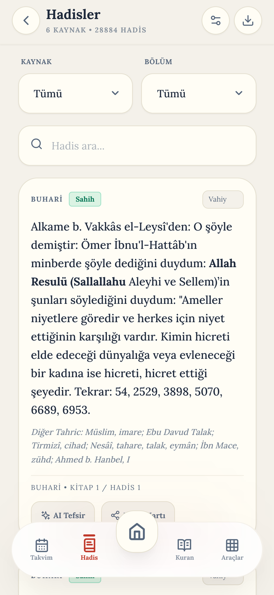
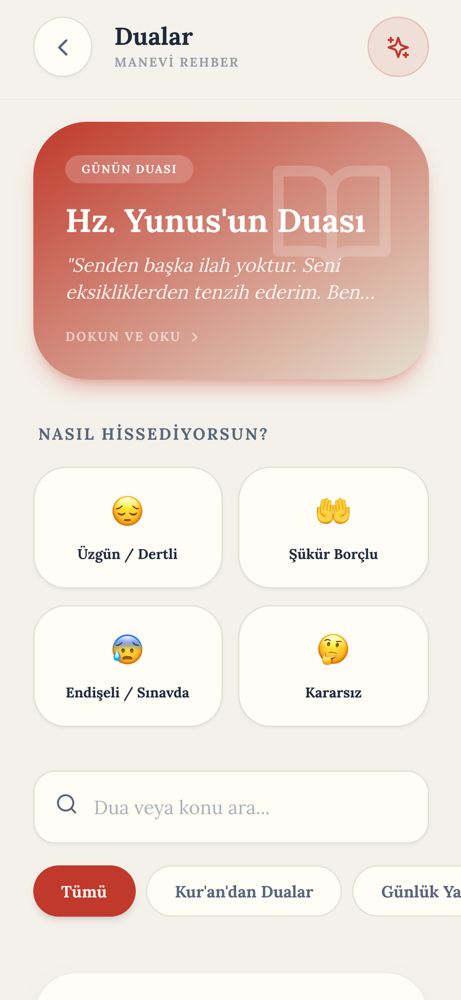
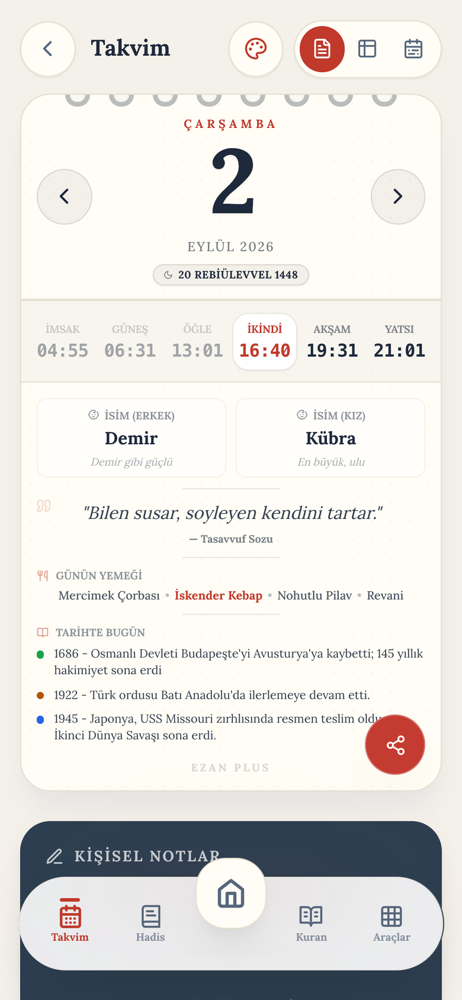
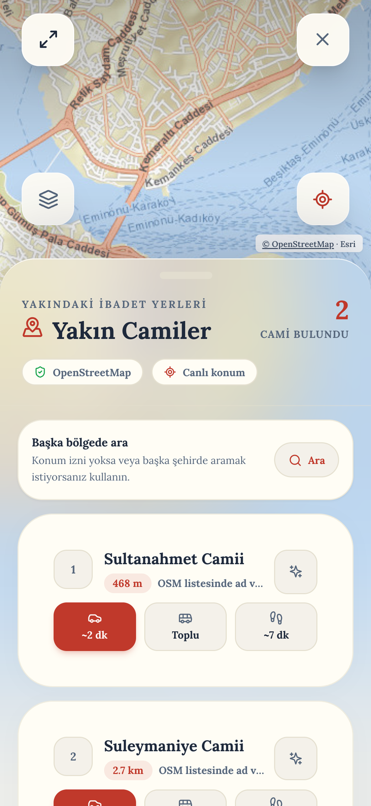

Ekranı Açmadan Vaktin Farkında Olun
iOS Kilit Ekranı, Ana Ekran Widget'ları ve Dinamik Ada (Live Activities) desteğiyle günün manevi ritmi daima gözünüzün önünde.
Ezan Plus; Diyanet İşleri Başkanlığı tescilli vakitleri, Şeyh Mişari Râşid el-Afâsî stüdyo tilavetleri ve Riyâzü's-Sâlihîn sahih hadis külliyatıyla ibadetinize eşlik eden reklamsız, asil ve sade bir manevi sığınaktır.
Diyanet İşleri Başkanlığı takvimine %100 uyumlu, saniyesi saniyesine doğru hesaplama.
Ezan Plus'ın doğrudan canlı uygulamasından alınan gerçek ekran görüntüleri. Gösterişten uzak, sade ve kalbe ferahlık veren bir estetik.

Diyanet takvimiyle birebir senkronize, bir sonraki vakte saniye saniye sayaç.

Uthmani hat, Şeyh Mişari Râşid tilavetleri ve kelime bazlı senkron karaoke.

Manyetik sensör kalibrasyonu ile milimetrik Kıble yönü ve mesafe tespiti.

Namaz sonrası tesbihat rehberi, hedefli zikir sayacı ve haptik titreşim.

1.900 sahih hadis-i şerif, Nebevî hikmet notları ve râvi künyeleri.

Ruh haline özel kategoriler, Kur'an ve sünnetten nurlu dualar ve mealleri.

Kandiller, mübarek geceler, Ramazan takvimi ve güne özel Nebevî öğütler.

Konumunuza en yakın camiler, canlı yürüyüş mesafesi ve yol tarifi.
114 Sûre ve 6.236 âyetin tamamında kelime bazlı senkron karaoke takibi. Şeyh Mişari'nin asil sedası ve Elmalılı Hamdi Yazır mealiyle kalbinizi dinlendirin.
Gereksiz kalabalıktan ve rahatsız edici reklamlardan arındırılmış, yalnızca ibadetinize odaklanan saygılı bir arayüz.
Kur'an okurken veya dua ederken karşınıza aniden fırlayan tam ekran reklamlar yok. İbadet anınız kutsaldır.
Sıfır halüsinasyon garantisi. 6.236 âyet, Medine Uthmani hat ve Riyâzü's-Sâlihîn 1.900 sahih hadis arşivi.
Şeyh Mişari Râşid tilavetleriyle senkron kelime takibi ve usta tiyatrocu Mazlum Kiper spiker anlatımı.
Konumunuz sunuculara gönderilmez, cihazınızda güvenle işlenir. İnternetsiz ortamda dahi kusursuz çalışır.
App Store ve Google Play'de binlerce 5 yıldızlı değerlendirme; reklamsız, sade ve huşu dolu bir ibadet yolculuğu.
“Sonunda namaz esnasında aniden fırlayan reklamlardan kurtaran, asil ve tertemiz bir uygulama buldum. Kur'an tilavetindeki senkron kelime takibi ezber yaparken inanılmaz faydalı oluyor.”
“Şeyh Mişari'nin tilavet kalitesi ve kıble pusulasının manyetik hassasiyeti harika. Vaktin girmesine 15 dakika kala gelen nazik bildirimler namaza vaktinde yetişmemi sağlıyor. Allah razı olsun.”
“Tasarımı piyasadaki tüm ezan programlarından fersah fersah önde. Göz yormayan Mushaf krem zemini, tescilli Riyâzü's-Sâlihîn hadisleri ve kilit ekranı widget'ı mükemmel çalışıyor.”
Ezan Plus ekosistemi ve güvenilirlik ilkelerimiz hakkında en çok merak edilen konular.
Evet, istisnasız %100 uyumludur. Ezan Plus, Diyanet İşleri Başkanlığı'nın resmi hesaplama yöntemlerini ve konumunuza özel milimetrik astronomik koordinatları temel alır.
Evet. Namaz vakti bildirimi, Kur'an tilaveti veya dua esnasında hiçbir ticari veya dikkati dağıtıcı reklam gösterilmez. Manevi huzurunuz ticari kaygılardan üstün tutulmuştur.
Evet. Bulunduğunuz konuma ait aylık ezan vakitleri, kıble pusulası, 1.900 sahih hadis külliyatı ve zikirmatik tamamen internetsiz ortamda kusursuz çalışır.
Kesinlikle hayır. Konum bilginiz yalnızca namaz vakitlerini ve kıble açısını hesaplamak üzere cihazınızın yerel işlemcisinde anlık işlenir; sunuculara gönderilmez veya üçüncü taraflarla paylaşılmaz.
Kur'an-ı Kerim Medine Kral Fehd Uthmani resmi hattıdır. Mealler tescilli Elmalılı Hamdi Yazır ve Diyanet külliyatıdır. Hadisler İmam Nevevî'nin muteber eseri Riyâzü's-Sâlihîn'den (1.900 sahih hadis) derlenmiştir.
Ezan Plus ile vaktin bereketine ortak olun. iOS ve Android için ücretsiz indirin, hayatınıza huzur katın.